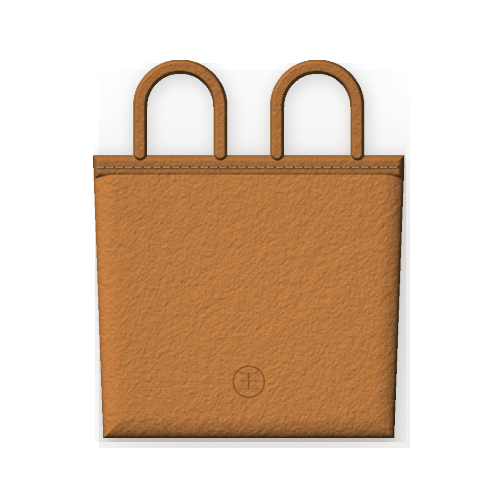
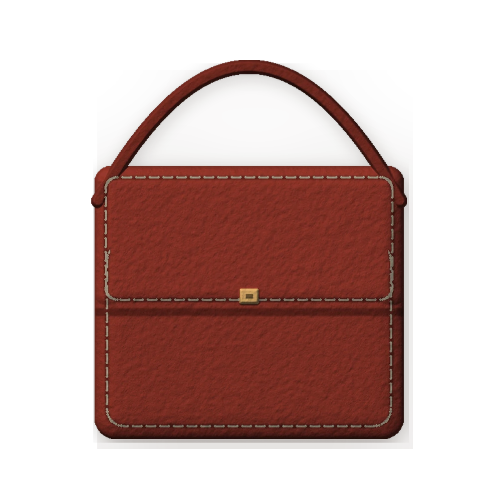
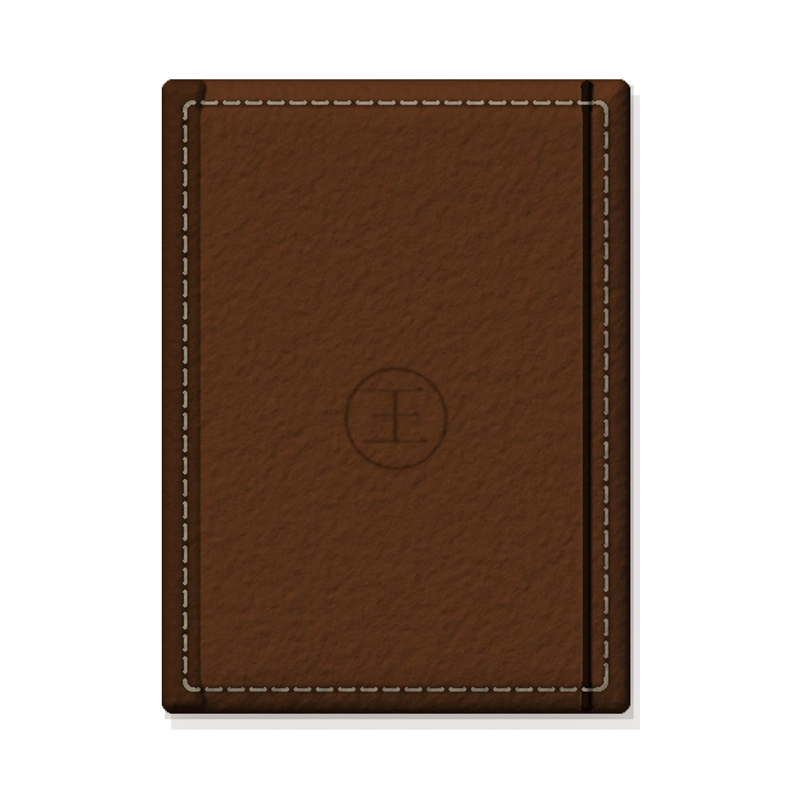

选皮如择友
只用头层牛皮与植鞣革。皮面看得见毛孔，摸得到纹理，也经得起时间。
一张皮，从选料到成为手袋，要经过裁切、削边、打孔、手缝、封边——几十道工序， 几百次落针。慢，是手工的代价，也是它的价值。
我们相信皮具会记住使用它的人：边角会磨圆，颜色会变深，划痕会变成故事。 所谓「养皮」，其实是在养一段日子。
只用头层牛皮与植鞣革。皮面看得见毛孔，摸得到纹理，也经得起时间。
马鞍缝双针走线，每一针都手工拉紧。断一处也不会散，这是机器的缝线做不到的。
不追求崭新，追求包浆。用得越久，它越像你自己的东西。
每一件都在店里完成：选皮、下料、打孔、缝合、封边。可来样定制，也可以带着想法来，从一张皮开始聊。



机器一天能做一百个包，我只想做好一个。Wang Leather Atelier — Changchun
从一张皮到一件成品，手的判断贯穿始终。机器能复制形状，复制不了手感。
看纹理、摸厚度、避开虫伤与松面。一张皮，只用最好的那部分。
按版型下刀，一刀到底。裁错一刀，整张皮就废了。
菱斩定距，孔距 3.85mm。孔要正，线才直。
马鞍缝，双针单线，每针拉紧。越用越牢，断一处也不散。

意大利植鞣革会呼吸，日晒之后颜色会慢慢加深；法国山羊皮细密轻巧，适合贴身的小皮件； 英国马缰革密度高，做皮带最经用。每一张皮都有自己的脾气，得顺着它来。
看看我们用的皮 →